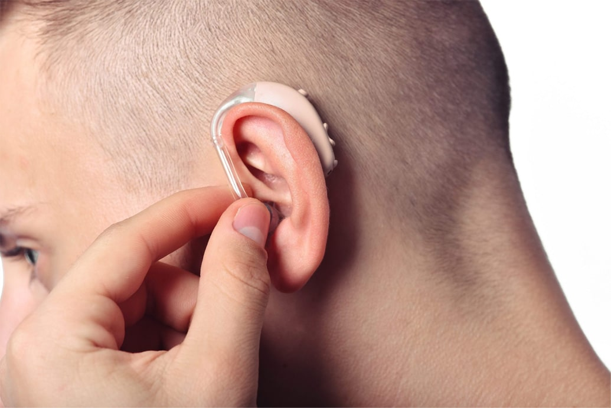

21.04.2022
Много често оглушаването първо се забелязва не от самия човек с увреден слух, а от близките му. Хората около вас могат да забележат, че силата на звука, която ви е удобна, всъщност е твърде висока. Периодичният шум в ушите, неясната реч, усещането, че човек говори твърде тихо, говори за влошаване на слуха. Какво може да се направи в тази ситуация и възможно ли е слуха да се възстанови? Това ще ни разкаже нашият поканен гост, лекар аудиолог Христо Лалев.

– Здравейте, докторе. Благодарим ви, че ни отделихте време от натоварения си график. Кажете ни, според статистиката, на каква възраст човек започва губи слуха си?
– Здравейте, благодаря ви за поканата, винаги се радвам да помогна. На първо място, искам да кажа, че увреждането на слуха в една или друга степен засяга около 700 милиона души по света, въпреки че тази статистика включва нарушения от всякакъв вид – от локални, които не изискват възстановяване, до глухота. Второ, не си мислете, че загубата на слуха е старческо заболяване”. Уви, но това не е така.
Влошаването на слуха може да бъде причинено от различни причини, сред които: наранявания, продължително излагане на силен шум, силни звуци, различни заболявания, употреба на определени лекарства и токсични ефекти. Обществен транспорт, особено в метро, работа в производството, силна музика, взимане на антибиотици. Дори отработените газове и боите на базата на ксилол могат да повлияят. Сега сред хората, които търсят помощ, има много юноши и хора на възраст до 40 години, със сензоневрална загуба на слуха, причинена от това, което обикновено се нарича "неблагоприятна среда".
– Как човек може да разбере, че вече има проблеми?
– Загубата на слуха (оглушаването) много рядко настъпва внезапно. Проблемите обикновено се развиват дълго време и постепенно, така че могат да останат незабелязани. Човек се адаптира, така че често не възникват никакви трудности в ежедневието. Ако човек е започнал лошо да различава фоновите звуци, появява се шум, секреция или болка в ушите, увеличава силата на звука, понякога пита повторно при разговор с него или се уморява от разговорите с други хора, то това е първото, което говори за съществуващия проблем.
Важно е да разберете, че повечето хора с увреден слух се притесняват да си признаят, че не разбират какво им се казва. Те също така са принудени да полагат големи усилия, за да се съсредоточат върху речта на събеседника си и да я разберат напълно, което може да доведе до стрес и силна умора, което само повишава нивото на риск от пълна загуба на слуха.

– Ако слухът започне да се влошава, може ли да се направи нещо?
– За щастие съвременната наука и медицина се развиват бързо и сега се появи лекарство, което може да помогне. Нарича се и действието му се основава на възстановяване на нормалното функциониране на космените клетки на кохлеята. Това е основната причина за оглушаването.
Ако слухът намалява постепенно, то степента на възстановяване зависи от много фактори, като например: възраст, степен на увреждане, инфекция и т.н. При леко увреждане се наблюдава положителна динамика в 99% от случаите! Такъв ефект няма нито едно лекарство.
При внезапно намаляване на слуха, ако терапията се започне навреме, около 92% от тези случаи завършват положително, а слухът напълно или почти напълно се възстановява.

– Как действа това лекарство?
– Всичко зависи от причината за загубата на слуха и естеството на заболяването. Например, при нарушение на кръвообращението в лабиринта подобрява метаболизма в тъканите и клетките.
Ако се наблюдава след инфекциозно намаляване на слуха , то влизащите в състава натурални съставки унищожават бактериите, подобряват тъканния метаболизъм и предаването на нервните импулси.
При възпаление или, например, при гноен отит , това лекарство има общо противовъзпалително, обезболяващо и антисептично действие. Пациентите отбелязват намаляване на отока, изчезване на неприятните симптоми за кратко време.
В случай на нарушения на звуковото възприятие , които са свързани със силен шум, травми, токсични или лекарствени въздействия, помага да се намали отока на слуховия нерв, премахва последиците от кръвоизливите във вътрешното ухо и потиска възпалителния процес.
– Защо то е толкова ефективно?” Има ли аналози?
– няма аналози, защото това е напълно натурално лекарство, което не съдържа антибиотици и не нарушава работата на системите и органите.
Именно благодарение на натуралните съставки :
- нормализира кръвообращението, локализирано в областта на ушите;
- помага за бързото възстановяване и регенерация на увредените хрущяли на слуховите органи;
- въздейства върху големи групи бактерии от групата на Pseudomonas aeruginosa до стрептококите, унищожавайки патогените и вирусите;
- меко въздейства върху възпалената област, премахва основната причина за нарушенията;
- допринася за подобряване на слуховата функция;
- спира развитието на тумора, активира локалните регенеративни процеси;
- допринасят за нормализирането на метаболитните процеси в клетъчните структури на ушните миди.

– Какви са показанията за употреба на ?
– Това лекарство има широк спектър, може да се използва както за терапевтични, така и за превантивни цели. Препоръчва се да се използва за възстановяване на слуха при следните показания:
- възпалителни процеси;
- запушване на ухото (особено сезонно, при промяна на температурата);
- нарушение на слуховата функция;
- различни болезнени усещания;
- генетично предразположение (глухота, отоларингологични заболявания, протичащи в хронична форма у близки роднини);
- повишено работно слухово натоварване или повишено ниво на домашния шум;
- използването на определени лекарства, които имат отрицателен ефект върху слуховата функция.
Този инструмент ще премахне всички тревожни симптоми и ще предотврати развитието на патологичния процес със съпътстващите усложнения. Практиката показва, че използването на терапевтичния курс с дава възможност за в бъдеще да се избегне носенето на слухов апарат.

– Това е невероятно! Оказва се, че сега всеки, който е оглушал може да реши проблема си?
– Всичко зависи от заболяването и степента на увреждане. най-често помага в началните етапи, а също така е незаменим за предотвратяване на оглушаването. Но индивидуално може да възстанови слуха и с по-сериозни нарушения.
– Все пак действието му е впечатляващо!
– Прави сте, засега това е единственото лекарство с толкова широк и ефективен спектър на действие.
– Благодаря, че ни разказахте как можем да се справим с оглушаването. Имам само още един въпрос. В кои аптеки може да се купи това лекарство?
– Винаги се радвам да помогна. И искам да кажа на всички, че ако имате проблеми със слуха или се намирате в постоянен шум, обичате да слушате музика силно или да гледате телевизия, то определено се нуждаете от поне един курс с . Що се отнася до втория ви въпрос, ще ви кажа честно, че не можете да си купите този продукт в аптеките. Това се дължи на факта, че производителите временно са прекратили договора си с всички аптечни мрежи.

– Защо? От къде тогава можем да си купим това лекарство?
– Производителите се опитваха да продават в аптеките в продължение на няколко месеца, но цената предложена от аптеките е просто неприемлива. Надценката от почти 1000% просто разорява хората! Представители на аптеките заявиха, че такава висока цена е оправдана от това, че е ефективно лекарство и никой вече няма да харчи пари всеки месец за старите лекарства, ако има възможност да мине курс с и да забрави за здравословните си проблеми. И това, казват те, води до огромни парични загуби за аптеките и фармацевтичните фирми. Ето защо те вдигнаха толкова много цената на дребно. Но бързам да ви успокоя, производителят е организирал онлайн продажби и дори дава 50% намаление върху определено количество от продукта . Затова препоръчвам на всички, които се интересуват да направят поръчка направо сега.
Докторе, слушам със слушалки през цялото време. Вредно ли е?
Вредно е превишаването на силата на звука, а също така вида им и използването на слушалките в транспорта. Слушалките трябва да се слагат на главата или да се правят по отливката на ухото. Бих ви препоръчал превантивен курс с , за да не се притеснявате, че може да оглушеете от слушалките.
Много ви благодаря докторе, че отговорихте на всичките ми въпроси! Много ми помогнахте. вече си поръчах това лекарство и мисля, че определено ще ми помогне.
Ще ви разкажа за моя опит. Слухът ми се влоши и всички започнаха да ме плашат, че скоро ще оглушея напълно и трябва бързо да си намеря слухов апарат, преди да е станало късно. Всъщност, не исках никакви операции на мозъка - това си е нещо рисковано, каквото и да говорим. Освен това ситуацията ми не беше толкова лоша. Реших да опитам по вашия съвет. И чудо - чувам всичко, дори как съседа ми хърка през 3 стени!
Докторе, шумът много ми пречи. Как мога да се предпазя и опасни ли са тапите за уши?
Всеки шум е вреден. Носете специални слушалки или опитайте , който ще предотврати проблемите ви със слуха в бъдеще. Що се отнася до тапите за уши, те не могат да се използват често. Не забравяйте да изберете дизайн под вашата ушна мида, следете за чистотата и срока на годност.
Какъв кошмар, изглежда майка ми вече има проблеми, съдейки по тази статия. Веднага поръчвам , докато не е късно.
Нещо не ми се вярва в това, че такова нещо изобщо е възможно.
Аз също не вярвах, докато сама не опитах. Съседката ми донесе , беше й останала половината от опаковката. И някакво чудо се случи, това лекарство ми помогна от вечното възпаление на вътрешното ухо и частичната ми загуба на слуха от това. Сега забравих за болните уши, главоболието и чувам супер.
Охо, не знаех, че това е възможно сега.
Ами какво искахте? Медицината не стои на едно място.
Докторе, периодично имам шум в ушите, какво да направя?
Това е шум в ушите. Това не е болест, а симптом. Шумът, скърцането / бръмченето / звъненето / щракането / звукът от пясък – това е нормална реакция на космените клетки на вътрешното ухо, които възникват при: леко увреждане на слуха, стрес, акустична травма, соматосензорна проява, съдово увреждане и страничен ефект от някои лекарства. Препоръчвам ви курсовата употреба на , за да се предотвратят по-нататъшните последици.
След тежко заболяване в работата ми имаше моменти, когато не се наспивах, работех по 18 часа. Работата, както се казва, беше на резултат. И в късния следобед, когато адреналинът спадаше, забелязах, че при разговор с партньора си не разбирам значението на думите, които той произнася. Чувах буквите, но не можах да ги събера в думи. Ако се съсредоточавах, то за известно време отново разбрах значението на казаното. А после отново чувах някакви глупости. Естествено, след почивка всичко ставаше нормално. Но си мисля, това неврология ли е или слуха? Може би ще опитам , за да нямам проблеми в бъдеще.
И на мен ми се е случвало такова. Проверявах се при лекарите, казват, че всичко ми е наред, освен слуха. Така че сега със сигурност ще опитам и този продукт.
е моето спасение. Слухът ми бързо започна да се влошава. Вероятно след няколко години изобщо нямаше да чувам нищо, ако не беше възможността да излекувам възпалението с и да подобря съставът на течността във вътрешното ми ухо, което също ми създаваше проблеми.
Докторе, започнах да забелязвам, че оглушавам, какво да правя?
При 90% от случаите загубата на слуха може успешно да бъде предотвратена, ако се действа навреме. Ако вие или вашите близки се започнали да забелязвате, че сте започнали да усилвате звука на телевизора или да питате отново думичките, препоръчвам ви да си направите аудиограмма, за да проверите за серни тапи и да мините курс на терапия с , за да се възстанови слуха ви и да предотвратите по-нататъшни последствия.
Оставете своя коментар:
Вашият коментар се модерира